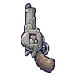

มาร์มอตหินผา
มอนธาตุดิน Lv 36–50
เจอที่
| แมพ | โซน | Lv | ภูมิภาค |
|---|---|---|---|
| ช่องเขาเสาหินหวีด | 36–44 | ที่ราบสูง | |
| ช่องเขาเสาหินหวีด | 38–50 | ที่ราบสูง | |
| ช่องเขาเสาหินหวีด | เสาหินรูหวีด | 44–48 | ที่ราบสูง |
| ช่องเขาเสาหินหวีด | เสาหินรูหวีด | 46–50 | ที่ราบสูง |
ค่าสถานะตามเลเวล
| Lv | HP | ATK | DEF | MDEF | EXP | Job |
|---|---|---|---|---|---|---|
| 36 | 4,032 | 63–94 | 10 | 9 | 48 | 36 |
| 43 | 6,629 | 80–121 | 12 | 10 | 56 | 42 |
| 50 | 10,098 | 93–139 | 14 | 12 | 64 | 48 |
ตีด้วยธาตุไหนดี
แรงขึ้น: ไฟ ×1.5 พิษ ×1.25
เบาลง: ลม ×0.5 ดิน ×0.25
วัตถุดิบที่ดรอป
| ของ | โอกาส | |
|---|---|---|
| ก้อนหินในแก้ม | 55% | 1 ชิ้น (15% ได้ 2) |
อุปกรณ์ที่ดรอป (1)
| ของ | โอกาส |
|---|---|
 ปืนพกคู่หินมาร์มอต | 0.25% |
สกิล
ยิงกระจาย (Lv 25+) · ยิงกระจาย (Lv 60+) · ปาตกใส่ (Lv 60+)